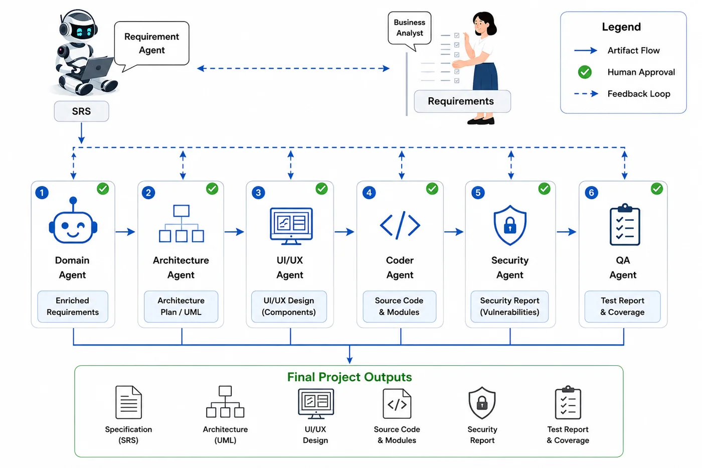

The literature we built on, the gap we found, the problem we set out to solve, our objectives, the methodology we followed and the technologies we used.
01 · Literature survey
What others have built
Work related to AutoForge falls into three groups. A systematic review by Hou et al. [3] reports that most LLM-based systems automate one SDLC phase, instead of coordinating several phases with durable oversight at each stage.
Group 1
Role-based multi-agent generators
ChatDev [1] runs a chat-based “virtual software company” through a waterfall-like process. MetaGPT [2] exchanges structured documents, such as an SRS-like specification and a design, between role agents. In both, review happens through agent dialogue or only after a full run.
Group 2
Coding agents on a given task
SWE-agent [4] and OpenHands [5] work on an already specified task, such as a GitHub issue. CodeAct [6], HyperAgent [7] and Agentless [8] refine this. AgentCoder [10] uses a programmer, test designer and test executor loop; RepoCoder [11] retrieves code from the same repository.
Group 3
One SDLC concern at a time
He, Treude and Lo [12] name human-agent collaboration and verifiable results as open problems. HULA [13] puts a human in the loop inside Jira, where engineers valued planning oversight as much as code oversight. Surveys on testing [14] and security [15] find most systems lack a deterministic verification layer.
Comparison with related systems
System
Multi-agent
SDLC coverage
Human gates
Artifact trace
ChatDev [1]
Yes
Partial
N/R
N/R
MetaGPT [2]
Yes
Partial
N/R
Partial
SWE-agent [4]
Partial
Coding only
N/R
N/R
OpenHands [5]
Yes
Coding
N/R
N/R
AgentCoder [10]
Yes
Coding + testing
N/R
N/R
AutoForge (ours)
Yes
7-agent pipeline
Yes
Versioned IDs
“Partial” means the work covers only part of the SDLC scope. “N/R” means not explicitly reported in the reviewed publication.
02 · Research gap
Where existing systems fall short
In the systems we reviewed, “human in the loop” mostly means a person reads a final diff, or the output of a completed run, after the fact.
Gap 1
No per-stage human decision
We did not find a system that treats every stage output as an independently versioned artifact with its own accept, reject or revise decision. If the process is interrupted, the run is generally lost rather than paused.
Gap 2
Specifications from memory
ChatDev and MetaGPT build their specification from the model’s own knowledge, without retrieving outside domain knowledge [16]. Requirements-engineering reviews [17] call this direction under-explored.
Gap 3
Testing, security and traceability together
Traceability has been a known problem for decades [18], and most solutions still address one narrow link type [19]. None of the compared systems reported versioned, addressable artifact IDs for each SDLC stage.
03 · Research problem
The problem we address
How can a team of AI agents take an e-commerce feature from requirements to working code so that every intermediate artifact is versioned, approved by a person before the next stage begins, and recoverable after an interruption — while the security and correctness of the generated code are checked with real evidence?
This matters even more in e-commerce, where a wrong early assumption — for example, how inventory or payment data should be modelled — is cheap to catch during a specification review and expensive to fix once code exists.
Research questions
RQ1Can the pipeline carry a feature through all seven human-approved stages while producing the required artifacts?
RQ2How does stage-wise human approval affect quality and revisions?
RQ3Does the pipeline reliably resume from a persisted checkpoint?
RQ4Do the Security and QA agents produce genuine, checkable evidence?
RQ5Does domain retrieval run as a reviewable enrichment stage?
04 · Research objectives
What we set out to achieve
Main objective: to design, build and evaluate a checkpointed, human-in-the-loop multi-agent pipeline that develops e-commerce web application features stage by stage.
O1
Staged, reviewed artifacts
A staged pipeline in which every SDLC artifact — specification, enriched specification, architecture plan and UML, UI metadata and components, code, security report and test report — is versioned and reviewed by a person before the next stage begins.
O2
Durable, resumable transitions
A decision taken well after a stage finishes, even after a backend restart, resumes the pipeline from the exact paused state.
O3
Verified end to end
Verify the whole pipeline, including security and testing, against real generated features rather than reporting its design alone.
Individual components
Member
Component
Agents
Santhuka D.N.M.D.
Requirement generation, domain enrichment and checkpointed orchestration
Requirement, Domain, Orchestrator
Sansala T.G.B.D.
Architecture planning and UI/UX design generation
Architecture, UI/UX
Dissanayake T.C.
Code generation with sandboxed verification
Coder
Oberathna R.D.T.D.
Security analysis and quality assurance
Security, QA
05 · Methodology
How we built and evaluated AutoForge
This is design-science research in the sense of Hevner et al. [20]: build an artifact, then evaluate it in its target environment. We evaluated AutoForge through a controlled e-commerce case study with features of different complexity, because no shared benchmark yet exists for “requirement to merged, human-approved code”.

Fig. 1 — Each agent produces an output, and every stage pauses for human approval before LangGraph checkpoints the artifact.
The seven agents
Requirement Agent
Generates the first SRS from one schema-constrained model call, then a second, narrower call checks it against a gap-analysis checklist. A revision patches specific fields instead of regenerating the whole document.
Domain Agent
Retrieves the closest matching chunks from a ChromaDB knowledge base and asks the model for a small, citation-grounded enrichment plan. A deterministic step merges the plan into an Enhanced SRS (“small plan, deterministic merge”).
Architecture Agent
Produces an architecture plan from the approved specification, derives use case, sequence and class diagrams, checks coverage and consistency, and renders the diagrams through PlantUML.
UI/UX Agent
Generates page-level UI metadata and each component behind a quality gate with a limited repair loop, assembles the pages, renders a preview screenshot of each, and updates design tokens only once approved.
Coder Agent
Plans the change against the approved artifacts, implements it on an isolated feature branch with a tool-calling loop, runs a sandboxed install and build, and reports from the real git diff. The branch merges on approval and is discarded on rejection.
Security Agent
Runs an AST pattern scanner, a secret scanner and npm audit, plus an optional AI review. Findings are deduplicated into a gate decision, and the report pauses for a human decision.
QA Agent
Finds testable modules, generates tests with the model (falling back to deterministic templates), runs them in the sandbox and reports pass and fail results for a human to review.
Orchestration
LangGraph runs one checkpointed state-graph thread per feature. At each stage the agent produces its artifact, and interrupt() pauses the graph for a reviewer to approve, reject or request a revision. The checkpoint is saved to MongoDB, so no work is lost even after a backend restart.
Evaluation plan
Experiment
What it measures
Item Listing (CRUD) case study
Artifacts, versions and human decisions at all seven stages
Multi-feature evaluation
Item Listing, Authentication/Authorization and Shopping Cart: revisions, QA and security results
RAG ON vs OFF ablation
Requirements generated, useful and missing requirements, revisions
Controlled vulnerability set
Security true and false positives, false negatives, precision and recall
Expanded QA run
Unit, regression and integration tests executed, passed and coverage
Correct resumption after an interruption at each of the seven stages
Execution performance
Total time, LLM calls, retries and tokens per run
06 · Technologies used
Our technology stack
Each agent is its own isolated Python package with an entry point, a prompt, a schema and stage-specific modules such as validators, scanners and Markdown builders.
Backend and orchestration
Py
Python + FastAPI
The backend API that runs every agent and serves the review interface.
LG
LangGraph
Runs one checkpointed state graph per feature and pauses each stage with interrupt().
Mo
MongoDB
Stores project data and the LangGraph checkpoints, so pipeline state survives a restart.
AI and retrieval
Ol
Ollama (qwen3-coder)
The default, locally hosted model, reached through a provider abstraction.
AI
OpenAI / Anthropic
Cloud providers supported by the same abstraction, chosen by configuration.
Ch
ChromaDB
Vector store holding the e-commerce knowledge base used by the Domain Agent.
ST
all-MiniLM-L6-v2
Sentence-embedding model used to index and retrieve knowledge chunks.
Review interface
Re
React 19 + Vite
The single-page review app where people approve, reject or revise each stage.
Tw
Tailwind CSS 4
Utility-first styling for the review interface.
TQ
TanStack Query
Fetching, caching and refreshing pipeline and artifact data.
Design and diagrams
PU
PlantUML
Renders the use case, sequence and class diagrams to PNG.
Pw
Playwright
Headless Chromium that renders a preview screenshot of every generated page.
Verification
Dk
Docker sandbox
Isolated container for installs, builds, dependency audits and test runs.
Gt
Git branches
Every Coder Agent change lives on its own branch, merged only on approval.
TS
TypeScript compiler AST
Parses generated code so the security scan matches real code constructs.
Jt
Jest + npm audit
Runs generated tests and checks dependencies for known vulnerabilities.
Generated application stack
Nx
Next.js (App Router)
The web framework of the e-commerce applications AutoForge generates.
TS
TypeScript
The language of the generated code.
Mg
MongoDB + Mongoose
Persistence layer of the generated applications.
References
C. Qian et al., “ChatDev: Communicative agents for software development,” ACL, 2024.
S. Hong et al., “MetaGPT: Meta programming for a multi-agent collaborative framework,” ICLR, 2024.
X. Hou et al., “Large language models for software engineering: A systematic literature review,” ACM TOSEM, 2024.
J. Yang et al., “SWE-agent: Agent-computer interfaces enable automated software engineering,” NeurIPS, 2024.
X. Wang et al., “OpenHands: An open platform for AI software developers as generalist agents,” ICLR, 2025.
X. Wang et al., “Executable code actions elicit better LLM agents,” arXiv:2402.01030, 2024.
H. N. Phan et al., “HyperAgent: Generalist software engineering agents to solve coding tasks at scale,” arXiv:2409.16299, 2024.
C. S. Xia et al., “Agentless: Demystifying LLM-based software engineering agents,” arXiv:2407.01489, 2024.
C. E. Jimenez et al., “SWE-bench: Can language models resolve real-world GitHub issues?” ICLR, 2024.
D. Huang et al., “AgentCoder: Multi-agent-based code generation with iterative testing and optimisation,” arXiv:2312.13010, 2023.
F. Zhang et al., “RepoCoder: Repository-level code completion through iterative retrieval and generation,” EMNLP, 2023.
J. He, C. Treude and D. Lo, “LLM-based multi-agent systems for software engineering: Literature review, vision, and the road ahead,” ACM TOSEM, 2025.
W. Takerngsaksiri et al., “Human-in-the-loop software development agents,” ICSE-SEIP, 2025.
J. Wang et al., “Software testing with large language models: Survey, landscape, and vision,” IEEE TSE, 2024.
X. Zhu et al., “When software security meets large language models: A survey,” IEEE/CAA JAS, 2025.
P. Lewis et al., “Retrieval-augmented generation for knowledge-intensive NLP tasks,” NeurIPS, 2020.
A. Hemmat et al., “Research directions for using LLM in software requirement engineering: A systematic review,” Frontiers in Computer Science, 2025.
O. C. Gotel and C. Finkelstein, “An analysis of the requirements traceability problem,” IEEE ICRE, 1994.
J. Mucha, A. Kaufmann and D. Riehle, “A systematic literature review of pre-requirements specification traceability,” Requirements Engineering, 2024.
A. R. Hevner, S. T. March, J. Park and S. Ram, “Design science in information systems research,” MIS Quarterly, 2004.
K. Pelluru, “LangChain & LangGraph in production: Architectures for multi-agent LLM systems,” JDDI, 2025.